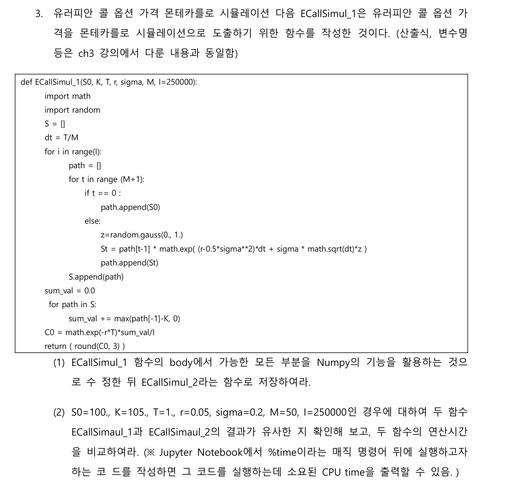

# 3. 열 별로 직전 대비 변동률을 구하고, 누적 곱하여 cum_ret 생성returns = price_sub.pct_change()cum_ret = (1+ returns).prod(axis=0) -1# 마지막에 1 빼주는게 맞음cum_ret
/var/folders/n2/jbh_0_091bx8qgz7j87t2qwc0000gp/T/ipykernel_81068/4181596083.py:2: FutureWarning:
The default fill_method='pad' in DataFrame.pct_change is deprecated and will be removed in a future version. Either fill in any non-leading NA values prior to calling pct_change or specify 'fill_method=None' to not fill NA values.
# 7. 종목 별 Sharpe ratio=cum_ret/std를 구하여 shrp 생성shrp = cum_ret / stdshrp
X000020 -0.412952
X000040 -1.106285
X000050 -0.795542
X000060 -0.651532
X000070 -0.593173
...
X361390 NaN
X361610 NaN
X363280 NaN
X375500 NaN
X378850 NaN
Length: 2203, dtype: float64
# 8. shrp에 NaN이 포함된 경우 shar의 최소값으로 대체shrp.fillna(shrp.min(), inplace=True)shrp
# 10. 위 10개 종목에 대한 cum_ret, std, shrp 값을 각 열로 하는 pd.DataFrame final_result 생성final_result = pd.DataFrame({'cum_ret': cum_ret[top10_shrp.index],'std': std[top10_shrp.index],'shrp': shrp[top10_shrp.index]})final_result
cum_ret
std
shrp
X088290
13.576271
1.102210
12.317314
X032500
3.443478
0.616854
5.582321
X101360
7.400000
1.379362
5.364799
X139670
4.049401
0.885900
4.570944
X138080
2.719443
0.674195
4.033614
X078130
4.155172
1.105034
3.760220
X214150
2.498146
0.673147
3.711147
X036540
2.142336
0.577894
3.707145
X097520
1.903846
0.525312
3.624222
X000990
1.628571
0.458481
3.552103
Problem 3.

Answer
def ECallSimul_2(S0, K, T, r, sigma, M, I=250000):import numpy as np S = np.zeros((I,M+1)) S[:,0] = S0 dt = T/M z = np.random.standard_normal(size=(I,M))for t inrange(1,M+1): S[:,t] = S[:,t-1]*np.exp((r-0.5*sigma**2)*dt + sigma*np.sqrt(dt)*z[:,t-1]) sum_val = np.maximum(S[:,-1]-K, 0) C0 = np.exp(-r*T)*np.mean(sum_val)return ( round(C0, 3) )